Vincent Willem van Gogh fue un pintor neerlandés, uno de los principales exponentes
del postimpresionismo. Pintó unos 800 cuadros y realizó más de 1600 dibujos.
Una figura central en su vida fue su hermano menor Theo, marchante de arte en París,
quien le prestó apoyo financiero de manera continua y desinteresada.
Obras
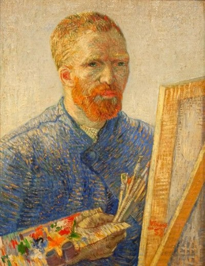
AUTORRETRATO COMO ARTISTA (1888)
En su autorretrato de 1888, Van Gogh, con mirada penetrante y pinceladas audaces, transmite una profunda introspección y pasión creativa. La obra refleja la intensidad emocional del artista en ese momento.
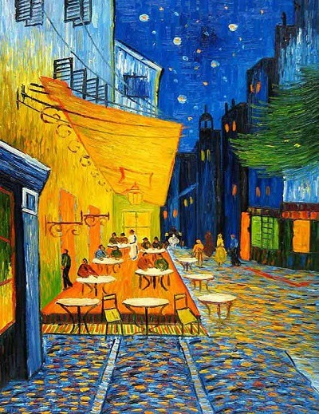
TERRAZA DE CAFÉ POR LA NOCHE (1888)
Otro de sus clásicos. Fue pintado en 1888 y es de las primeras obras que pintó en Arles. Por cierto, el café todavía existe y es toda una atracción turística.
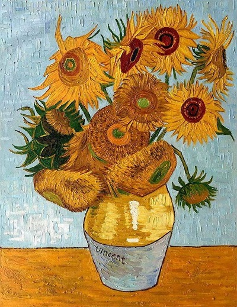
JARRÓN CON QUINCE GIRASOLES (1889)
La serie "Jarrón con quince girasoles" de Van Gogh, 1889, retrata girasoles en un jarrón, reflejando su profundo amor por la naturaleza y la belleza de lo simple.
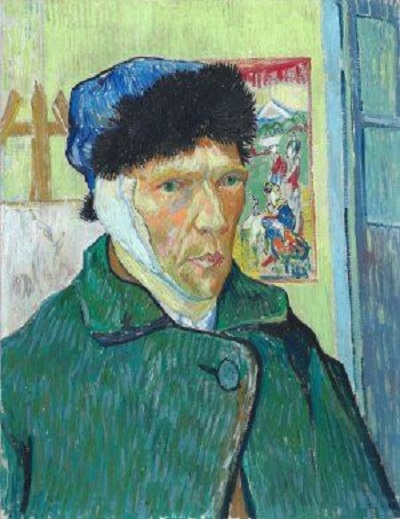
AUTORRETRATO CON LA OREJA VENDADA (1899)
En este icónico autorretrato de 1889, Van Gogh se retrata con la oreja vendada tras autolesionarse durante un episodio de sufrimiento mental.
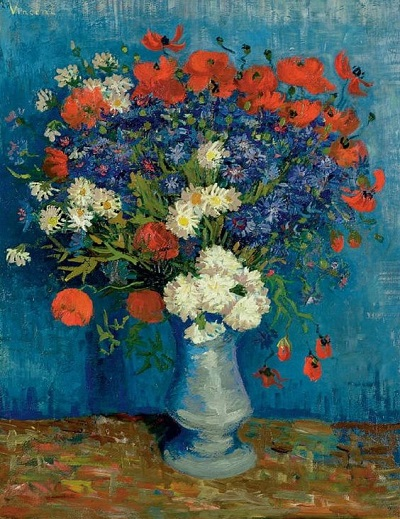
JARRÓN CON ANCIANOS Y AMAPOLAS (1887)
Van Gogh plasma en este cuadro un jarrón con flores silvestres, usando colores vibrantes y pinceladas dinámicas para reflejar su fascinación por la naturaleza.
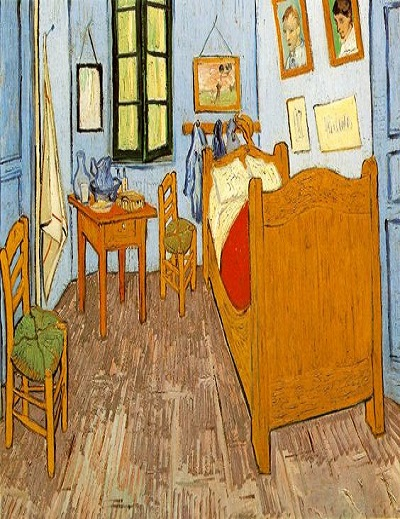
LA HABITACIÓN (1888)
Van Gogh pintó en 1888 una serie de cuadros representando su habitación en la Casa Amarilla en Arlés, Francia. Muestra su fascinación por lo doméstico y su talento para capturar la atmósfera íntima.
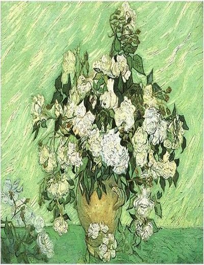
JARRÓN CON ROSAS (1890)
"Jarrón con rosas" (1890): Van Gogh captura la belleza de las rosas con pinceladas vibrantes y colores armoniosos, reflejando paz en medio del sufrimiento.
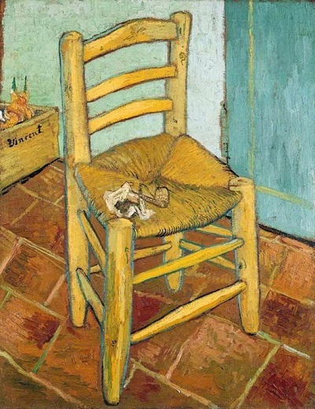
LA SILLA (1888)
"La Silla" muestra una silla vacía de mimbre con almohada y manta roja, destacando la belleza en lo ordinario.
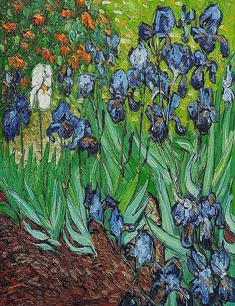
LIRIOS (1889)
En "Lirios" (1889), Van Gogh usa pinceladas audaces y colores vibrantes para capturar la vitalidad y belleza de las flores en un jarrón.
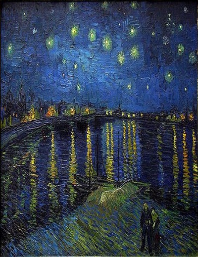
NOCHE ESTRELLADA SOBRE EL RÓDANO (1888)
Un paisaje nocturno del Ródano, con tonos azules, verdes y un cielo estrellado lleno de remolinos.
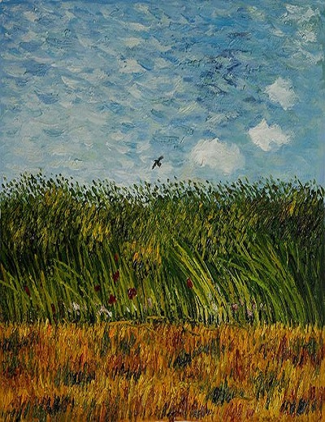
TRIGAL CON AMAPOLAS Y ALONDRA (1887)
Campo de trigo dorado bajo cielo azul, una alondra se eleva, amapolas en primer plano, pinceladas vigorosas y colores intensos.
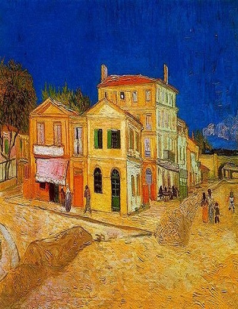
LA CASA AMARILLA (1888)
"La casa amarilla" muestra la vibrante arquitectura urbana en tonos brillantes de amarillo y naranja contra un cielo azul intenso.
Articulos
Loving Vincent
Es una película biográfica animada experimental de 2017 sobre la vida del pintor neerlandés Vincent van Gogh, enfocada particularmente en las circunstancias de su muerte en 1890. Es la primera película animada completamente usando pinturas.
Estuvo a punto de no convertirse en artista en absoluto
¿Te imaginas un mundo sin Los girasoles o sin La noche estrellada? Este mundo no estuvo muy lejos. En un principio, van Gogh tenía intención de ser pastor evangélico y trabajó como predicador laico en Borinage, Bélgica. No decidió que su futuro estaría en la pintura hasta ser despedido de este trabajo. De hecho, van Gogh no comenzó a pintar hasta los 27 años y nunca recibió ninguna formación formal.
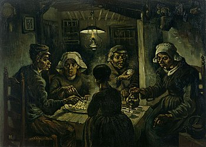
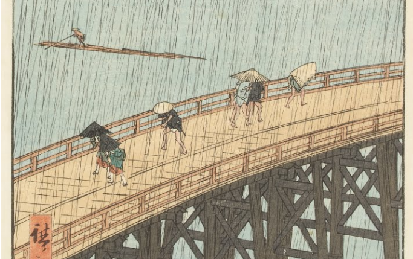
Inspiración desde Oriente
Vincent van Gogh tuvo diversas inspiraciones, incluida la pintura de género neerlandesa y las pinturas realistas de Millet y sus contemporáneos, pero se vio particularmente influenciado por las impresiones en madera japonesas. En algunos casos llegó a hacer copias, aunque con un estilo muy expresivo e idiosincrásico, de grabados de Hiroshige, Kesai Eisen y otros.
Un hombre de letras
Además de crear cientos de obras de arte, Van Gogh escribió casi el mismo número de cartas y tarjetas postales. A menudo incluyen los primeros bocetos de muchas de sus obras maestras más famosas.